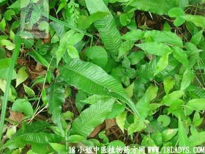

(本文解释权归中药材天地网兄弟站-中药大全-中医植物药方网所有,如需转载请注明出处)
仙人对坐草(中药材植物名:三羽新月蕨)(植物科目:金星蕨科)

别名：蛇退梦想、入地蜈蚣、三枝标。
植物名：三羽新月蕨。
生长环境：生长于山地树林下或水沟溪边稍荫蔽湿地。
分布：我国南部和热带亚洲各地。
入药部分：全草。
采集期：春、夏、秋季。
自采地点：大山石岩边。
性味：性平、味微苦。
功能：散毒、消肿、止痛。
主治、用量和用法：1、毒蛇咬伤：干用1至2两，煎水冲酒服；2、痈疮、疥疮，配伍用；3、皮肤痕痒生蛇，配伍用。
验方：（治皮肤生蛇方）：仙人对坐草、七星剑、六耳苓、毛射香、入地金牛根，各5钱，为末开滚水，片糖适量调搽患处。
（方解）仙人对坐草、七星剑解毒疗疥疮；六耳苓、毛麝香祛风止痒；入地金牛行气活血、解毒。合为皮肤病之祛风、清热、解毒剂，治疗皮肤疥疮、丘疹甚验。
（方歌）皮肤生蛇痒不停，仙人对坐六耳苓，七星毛麝金牛强，为末加糖敷即灵。
(本文解释权归中药材天地网兄弟站-中药大全-中医植物药方网所有,如需转载请注明出处)